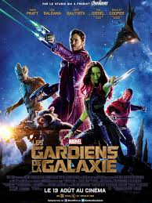

<!doctype htlm>
<htlm>
<head></head>
<body>
<h1>Dans le ciel</h1>
<h2>Le jour on y voit</h2>
<p>le soleil</p>
<h2>La nuit on y voit</h2>
<p>la lune</p>
<h1>Les mois de l'année</h1>
<ol>
<li>Janvier</li>
<li>Février</li>
<li>Mars</li>
<li>Avril</li>
<li>Mai</li>
<li>Juin</li>
<li>Juillet</li>
<li>Août</li>
<li>Septembre</li>
<li>Octobre</li>
<li>Novembre</li>
<li>Décembre</li>
</ol>
<h1>Les jours de la semaine</h1>
<ul>
<li>Lundi</li>
<li>Mardi</li>
<li>Mercredi</li>
<li>Jeudi</li>
<li>Vendredi</li>
<li>Samedi</li>
<li>Dimanche</li>
</ul>


<head><style> table, th, td {border: 1px solid black;}
</style></head>
<body>
<p>EXERCICE 4</p>
<caption>Les signes astrologiques</caption>
<table>
<tr><th>Dates</th><th>Signe</th></tr>
<tr><td>22/12 - 19/01</td><td>Capricorne</td></tr>
<tr><td>20/01 - 19/02</td><td>Verseau</td></tr>
<tr><td>20/02 - 20/03</td><td>Poissons</td></tr> 
<tr><td>21/03 - 19/04</td><td>Bélier</td> </tr>
<tr> <td>20/04 - 20/05</td> <td>Taureau</td></tr>
<tr><td>21/05 - 20/06</td><td>Gémeaux</td></tr>
<tr><td>21/06 - 22/07</td><td>Cancer</td></tr>
<tr><td>23/07 - 23/08</td><td>Lion</td></tr>
<tr><td>24/08 - 22/09</td><td>Vierge</td></tr>
<tr><td>23/09 - 22/10</td><td>Balance</td></tr>
<tr><td>23/20 - 21/11</td><td>Scorpion</td></tr>
<tr><td>22/11 - 21/12</td><td>Sagittaire</td></tr>
</tr>
</table>
<p>EXERCICE 5</p>
<p><strong>Citizen Kane</strong></p>
<p>Kane, favori pour le poste de gouverneur, tient son discours de campagne. Au début des années 1940, Charles<br>Foster Kane meurt dans 
son manoir de Xanadu, un vaste domaine palatial de Floride, en prononçant dans un dernier souffle <em>rosebud</em></p>
<p>EXERCICE 6</p>
<p>Article Marvel <a href ="http://www.allocine.fr/video/player_gen_cmedia=19546177&cfilm=196604.html" target="blank"> </a></p>

</body>
</htlm>